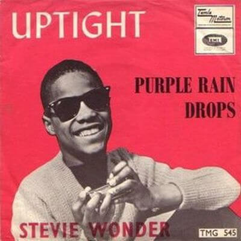

Video
Silvia Moy se ofreció voluntaria para trabajar con Stevie cuando otros ya no querían, debido a que su voz de adolescente de 15 años estaba cambiando, y sus perspectivas comerciales no eran claras. Desde su gran hit en 1963 -"Fingertips"- no había conseguido situar otra canción en las listas de éxito.
Revisando el material con Stevie, Silvia Moy tomo nota de una frase que Stevie dijo; “Everything is alright, uptight” surgiendo la idea de la canción. Stevie trabajó con los acordes, Silvia con la melodía vocal, y Cosby se encargó de los arreglos. El eléctrico comienzo de guitarra está inspirado en la canción de los Rolling Stones "(I Can not Get No) Satisfaction", el gran éxito del pasado verano. De esta forma dió forma a este éxito de Stevie que alcanzó el tercer puestos en las listas U.S.A. .

Letra
Baby, ev'rything is all right, uptight, out of sight.
Baby, ev'rything is all right, uptight, out of sight.
I'm a poorman's son, from across the railroad tracks,
The only shirt I own is hangin' on my back,
But I'm the envy of ev'ry single guy
Since I'm the apple of my girl's eye.
When we go out stepping on the town for a while
My money's low and my suit's out of style,
But it's all right if my clothes aren't new
Out of sight because my heart is true.
She says baby ev'rything is alright, uptight, out of sight.
Baby, ev'rything is alright, uptight, clean out of sight.
I'm a pearl of a girl, I guess that's what you might say,
I guess her folks brought her up that way,
The right side of the tracks, she was born and raised
In a great big old house, full of butlers and maids.
No one is better than I, I know I'm just an average guy,
No football hero or smooth Don Juan,
Got empty pockets, you see I'm a poorman's son.
She says give her the things that money can buy
But I'll never, never make my baby cry,
And it's all right, what I can't do,
Out of sight because my heart is true,
She says baby ev'rything is alright, uptight, clean out of sight.
Baby, ev'rything is alright, uptight, clean out of sight.
Baby, ev'rything is alright, uptight, ah ah ah ah,
Baby, ev'rything is alright, uptight, clean out of sight.
Baby, ev'rything is alright, uptight, clean out of sight.